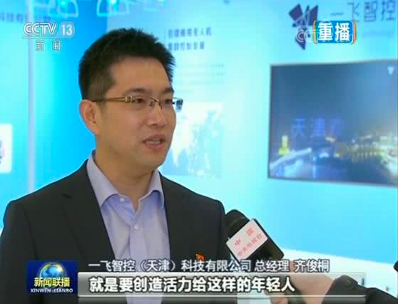
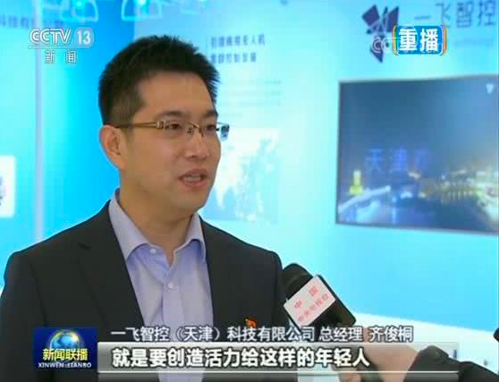

牢记总书记嘱托 谱写京津冀协同发展新篇章
宏伟蓝图，殷殷嘱托，让京津冀的干部群众备受鼓舞，倍感振奋。大家表示：要牢记总书记嘱托，勇于担当、敢于创新、久久为功，坚定不移走高质量发展之路，推动京津冀协同发展。
习近平总书记京津冀考察的第一站，就来到了河北雄安新区，这是他时隔近两年之后再到雄安。他强调，新区首先就要新在规划、建设的理念上，要体现出前瞻性、引领性。总书记的重要指示，让大家感到重任在肩，对雄安的前景充满信心。
宏伟蓝图，殷殷嘱托，让京津冀的干部群众备受鼓舞，倍感振奋。大家表示：要牢记总书记嘱托，勇于担当、敢于创新、久久为功，坚定不移走高质量发展之路，推动京津冀协同发展。
习近平总书记京津冀考察的第一站，就来到了河北雄安新区，这是他时隔近两年之后再到雄安。他强调，新区首先就要新在规划、建设的理念上，要体现出前瞻性、引领性。总书记的重要指示，让大家感到重任在肩，对雄安的前景充满信心。